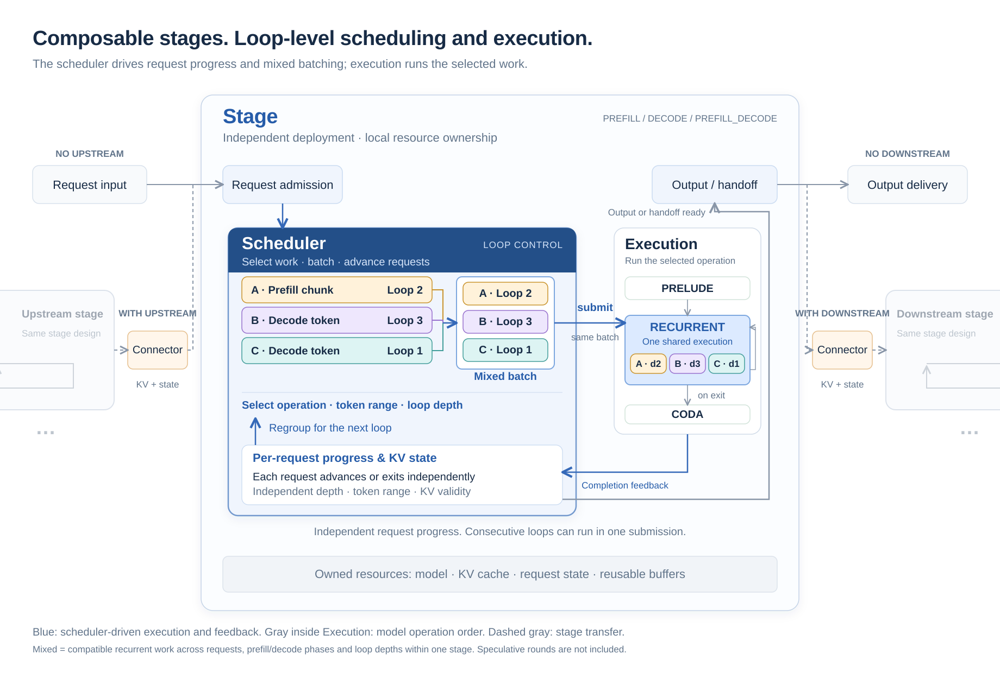
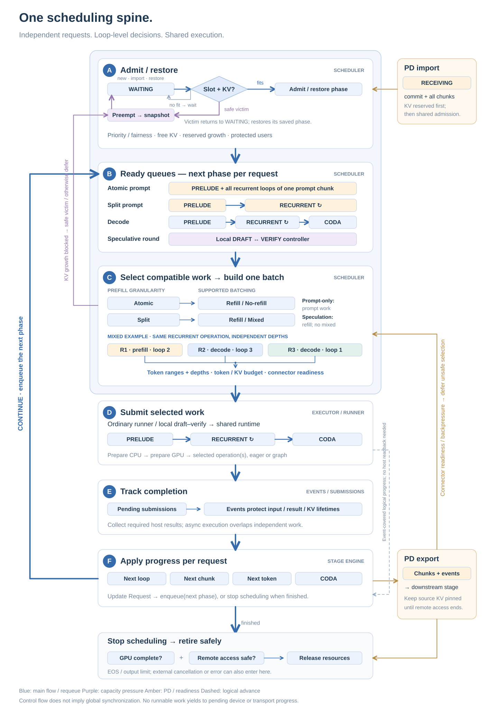
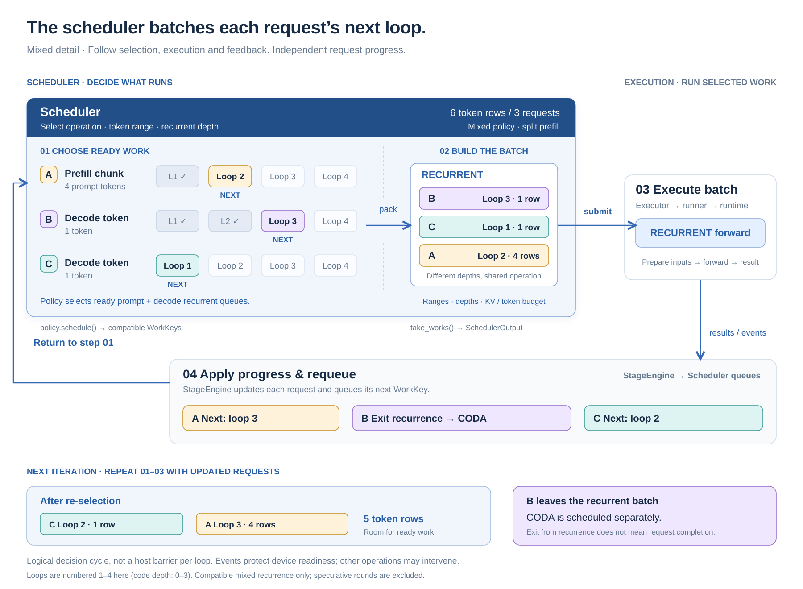
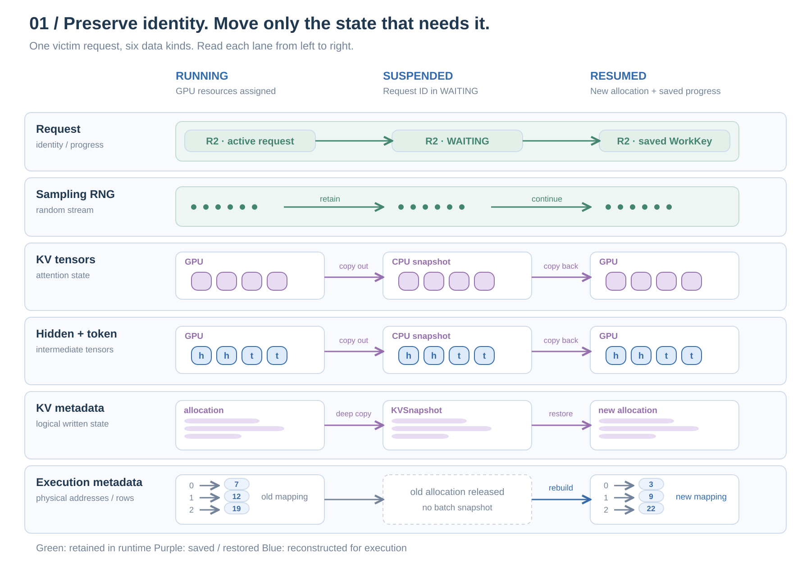
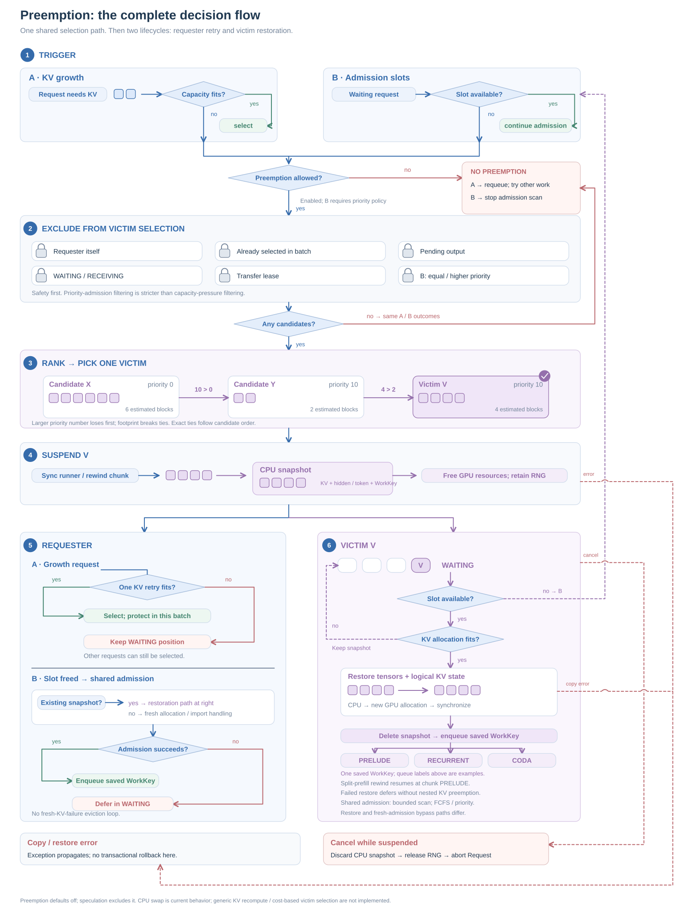
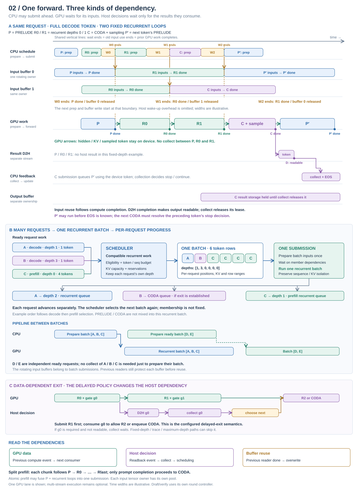
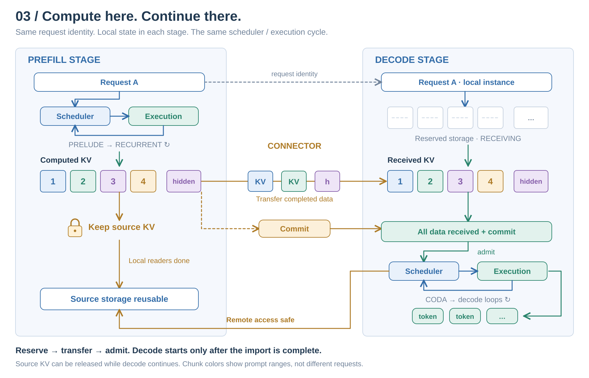
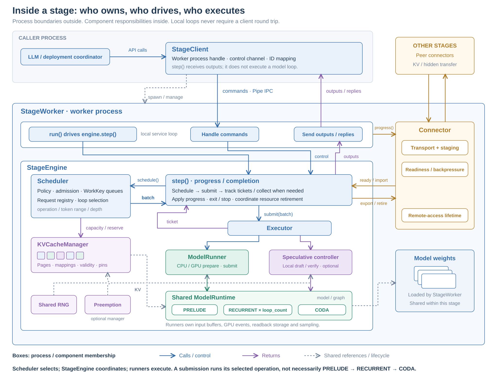
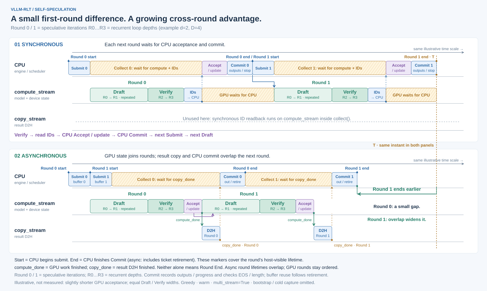

Engine and schedulingOn-device executionRequest and KV stateCross-stage handoff
Scroll within the diagram, or open the SVG in a new window to zoom further.









Rendered offline; no network or Mermaid plugin required. For limitations, including arbitrary launch topologies and PD with speculation, see the architecture guide.